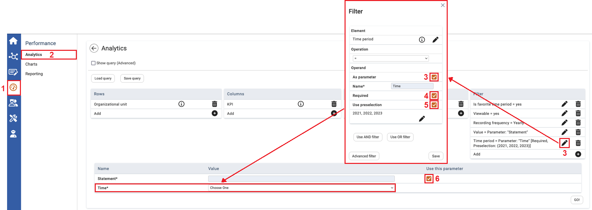

The parameter is an additional feature. After creating the query, this feature allows you to set the filter using this parameter. This also enables data viewers to customize existing queries.

| 1 | On the left navigational panel, click Performance. |
| 2 | Click Analytics. |
| 3 | Click to insert a variable (e.g. time). Here you can fill out the filter’s settings. You can select the parameter’s checkbox and insert the desired name you would like to filter. |
| 4 | Here you can select Required to set the parameter as mandatory. |
| 5 | You can optionally use a preselection for the parameter so that only selectable values appear. This is especially relevant if a data viewer is not supposed to see all possible options (e.g. only two years). |
| 6 | Deselect this checkbox to ignore the filter that uses the parameter (in this case, for example, the filtering would not be based on the content of the CEO's statement). The checkbox can only be deactivated if the parameter was not previously marked as Required (by the Data Editor). |